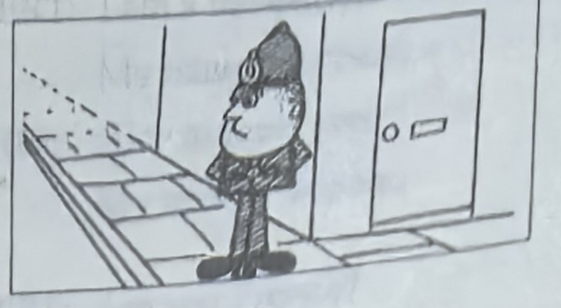
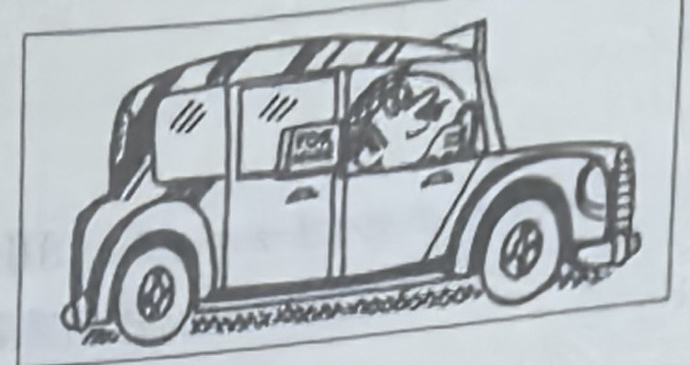
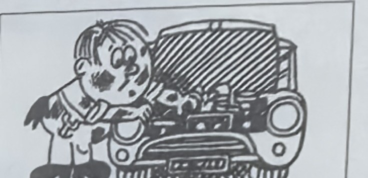
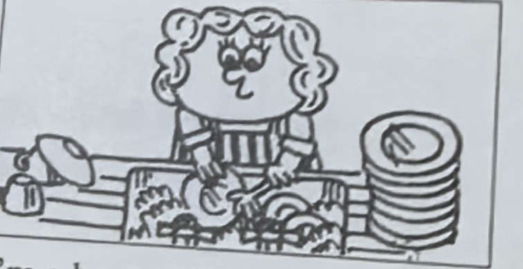
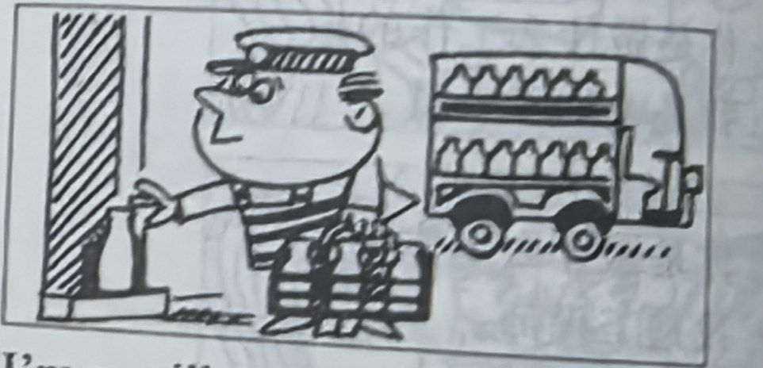
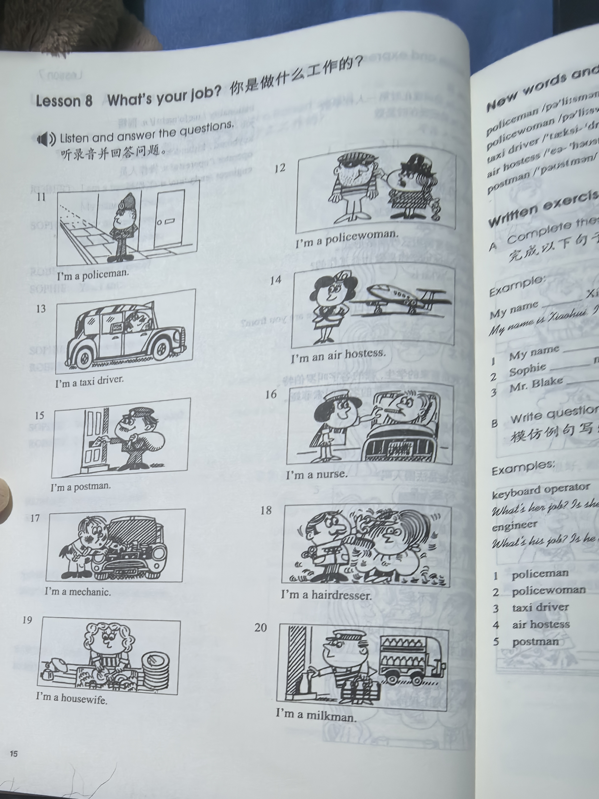
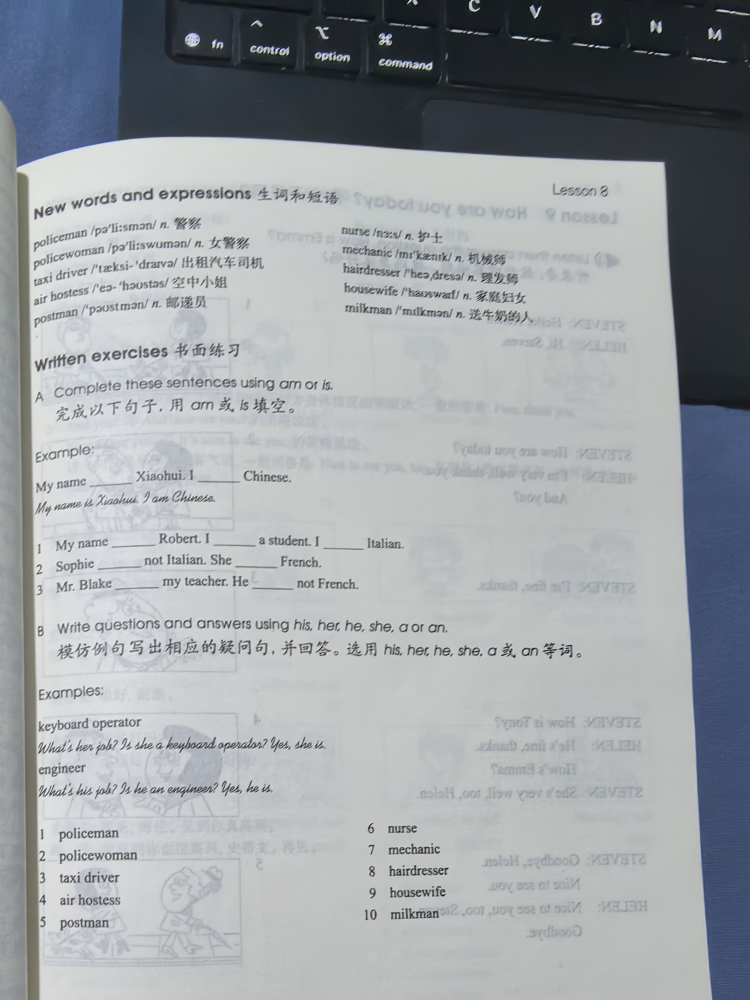

Lesson content · 课文
Lesson 8: What's your job? · 你是做什么工作的？
Listen and answer the questions. 听录音并回答问题。





New words and expressions · 生词和短语
| Word · 单词 | Pronunciation · 音标 | Meaning · 词义 |
|---|---|---|
| policeman | /pəˈliːsmən/ | n. 警察 |
| policewoman | /pəˈliːswʊmən/ | n. 女警察 |
| taxi driver | /ˈtæksi ˈdraɪvə/ | 出租汽车司机 |
| air hostess | /ˈeə ˌhəʊstəs/ | 空中小姐 |
| postman | /ˈpəʊstmən/ | n. 邮递员 |
| nurse | /nɜːs/ | n. 护士 |
| mechanic | /mɪˈkænɪk/ | n. 机械师 |
| hairdresser | /ˈheədresə/ | n. 理发师 |
| housewife | /ˈhaʊswaɪf/ | n. 家庭妇女 |
| milkman | /ˈmɪlkmən/ | n. 送牛奶的人 |
Practice · 课文练习
Written exercises · 书面练习
A. Am or is
Complete these sentences using am or is. 完成以下句子，用 am 或 is 填空。
Example · 例句
My name is Xiaohui. I am Chinese.
-
textbook: A. Am or is — My name ____ Robert. I ____ a student. I ____ Italian.
-
textbook: A. Am or is — Sophie ____ not Italian. She ____ French.
-
textbook: A. Am or is — Mr. Blake ____ my teacher. He ____ not French.
B. Questions and answers · 提问并回答
Write questions and answers using his, her, he, she, a or an. 模仿例句写出相应的疑问句，并回答。选用 his、her、he、she、a 或 an 等词。
Example · 例句
keyboard operator → What’s her job? Is she a keyboard operator? Yes, she is.
engineer → What’s his job? Is he an engineer? Yes, he is.
-
textbook: B. Questions and answers · 提问并回答 — policeman
-
textbook: B. Questions and answers · 提问并回答 — policewoman
-
textbook: B. Questions and answers · 提问并回答 — taxi driver
-
textbook: B. Questions and answers · 提问并回答 — air hostess
-
textbook: B. Questions and answers · 提问并回答 — postman
-
textbook: B. Questions and answers · 提问并回答 — nurse
-
textbook: B. Questions and answers · 提问并回答 — mechanic
-
textbook: B. Questions and answers · 提问并回答 — hairdresser
-
textbook: B. Questions and answers · 提问并回答 — housewife
Practice worksheet · 配套练习
A. Questions
Write a question for each answer. 根据答案写出相应的疑问句。
Example · 例句
What’s his job? — He’s a postman.
-
worksheet: A. Questions — She’s a keyboard operator.
-
worksheet: A. Questions — He’s a milkman.
-
worksheet: A. Questions — She’s a nurse.
-
worksheet: A. Questions — He’s a taxi driver.
-
worksheet: A. Questions — She’s a taxi driver, too.
B. Structure
Fill in a or an. 用 a 或 an 填空。
-
worksheet: B. Structure — She’s ____ housewife.
-
worksheet: B. Structure — Robert is ____ engineer.
-
worksheet: B. Structure — She is ____ policewoman.
-
worksheet: B. Structure — He is ____ mechanic.
-
worksheet: B. Structure — She’s ____ air hostess.
-
worksheet: B. Structure — Sophie is ____ keyboard operator.
-
worksheet: B. Structure — Gilberto is ____ Italian taxi driver.
-
worksheet: B. Structure — I’m ____ hairdresser.
-
worksheet: B. Structure — He is ____ nurse.
-
worksheet: B. Structure — She’s ____ typist.
C. About you
Answer about yourself. 根据你自己的情况回答以下问题。
Example · 例句
Are you Italian? — No, I’m not. I’m Chinese.
-
worksheet: C. About you — Are you a policeman?
-
worksheet: C. About you — Are you Japanese?
-
worksheet: C. About you — Are you a teacher?
D. Situation
What do you say? 根据以下情景写出你应该说的话。
-
worksheet: D. Situation — Someone introduces you to a stranger in a formal situation.
Original images · 原图对照
Expand a page to compare it with the transcription. Open the original in a new tab to zoom in.
展开原图核对文字，也可以在新标签页打开原图放大查看。
Lesson text and oral practice · 课文与口头练习
Open original · 打开原图 ↗ Download original · 下载原图


Vocabulary, notes and written exercises · 生词、注释与书面练习
Open original · 打开原图 ↗ Download original · 下载原图



Grammar practice · 语法练习
I. Complete with a or an
- My name is Thomas. I am ___ Italian student. My father is ___ engineer. My mother is ___ teacher.
- Here's ___ new book. It's ___ English book.
- What's your job? I'm ___ hairdresser.
- Are you ___ policewoman? No, I'm not ___ policewoman. I'm ___ air hostess.
- This is ___ umbrella. It's ___ old umbrella.
- Is he ___ mechanic or ___ taxi driver? He's ___ taxi driver.
- What's her job? She's ___ keyboard operator.
- This is ___ English car. It's ___ Mini.
- Are you ___ German student or ___ Italian student?
- What make is it? It's ___ Ford.
II. Ask and answer questions, using the cues given according to the example
Example: your/milkman -> What's your job? / I'm a milkman.
your/engineerher/nursehis/teacherhis/mechanicyour/postmanyour/hairdresserhis/taxi driverher/keyboard operatorher/air hostessyour/policewomanher/housewife
III. Answer using the cue
Example: Is he an engineer or a mechanic? (engineer) -> He isn't a mechanic. He's an engineer.
- Are you a taxi driver or a mechanic? (taxi driver)
- Is she a nurse or a doctor? (doctor)
- Is he a postman or a milkman? (milkman)
- Are you a French teacher or an English teacher? (English teacher)
- Is your sister a nurse or an air hostess? (air hostess)
- Is your teacher German or Swedish? (German)
- Are you a keyboard operator or a nurse? (keyboard operator)
- Are you a policeman or a hairdresser? (hairdresser)
- Are you a teacher or a student? (student)
Your notes and answers
Use this space for longer responses or exercises that do not have an individual answer box.